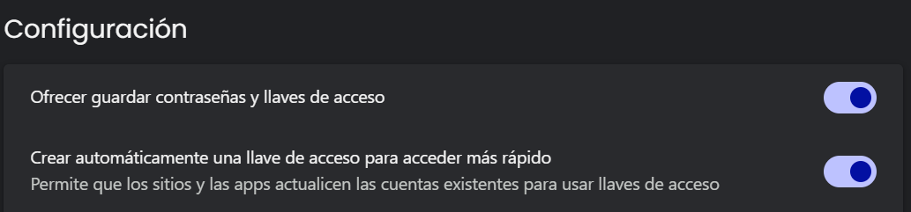

Configuración de bloqueo de contraseña
Instrucciones visuales para conocer y gestionar las configuraciones clave de tu estación de trabajo.
Gestión de contraseñas en el navegador
A continuación, se detalla cómo revisar la configuración de guardado de contraseñas en **Microsoft Edge**, el navegador estándar de la empresa. Es posible que algunas de estas opciones sean manejadas directamente por tu organización.
Microsoft Edge (Navegador principal)
-
Paso 1: Abre Edge y haz clic en el ícono de tres puntos (...) para desplegar el menú.

-
Paso 2: Elige la opción de "Configuración".

-
Paso 3: En tu perfil, selecciona "Contraseñas" para acceder a la gestión.

-
Paso 4: Localiza la opción "Ofrecer la posibilidad de guardar contraseñas". Aquí podrás ver si la configuración está libre o es manejada por la organización.

Google Chrome (Alternativo)
Si adicionalmente utilizas Google Chrome, puedes revisar su configuración con los siguientes pasos.
-
Paso 1: Abre Chrome y haz clic en el ícono de tres puntos (⋮) para abrir el menú.

-
Paso 2: Selecciona "Configuración" en el menú.

-
Paso 3: Ve a "Autocompletar y contraseñas" y luego haz clic en "Gestor de contraseñas de Google".

- Paso 4: Dentro de "Configuración", localiza el interruptor "Preguntar si quiero guardar contraseñas". 
¿Cómo se ve una opción administrada?
La prueba definitiva para saber si una configuración está siendo manejada por la empresa es siempre la apariencia visual del interruptor en el menú del navegador.
La prueba definitiva: revisa el interruptor
Resultado A: Sí está bloqueado 👍
La configuración está siendo manejada correctamente si ves lo siguiente:
- El interruptor está en gris y no puedes hacerle clic.
- Aparece un ícono de edificio 🏢.
- Se muestra el mensaje: "Tu organización administra esta configuración".
Resultado B: No está bloqueado 👎
La configuración no está siendo manejada si:
- El interruptor tiene color (azul o verde).
- Puedes activarlo y desactivarlo libremente con un clic.
- No aparece ningún ícono de edificio ni mensaje de la organización.